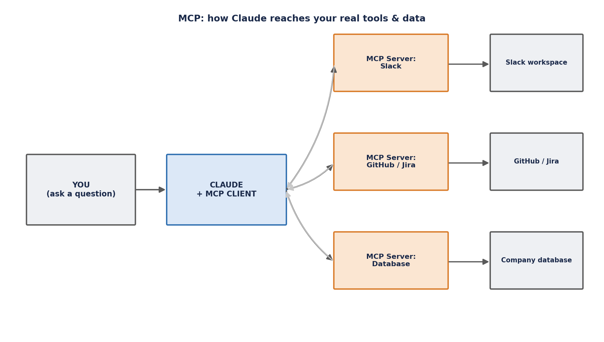

MCP (Model Context Protocol)
Overview
The Model Context Protocol (MCP) is an open standard for connecting an AI model to external tools and data sources through one common interface, instead of every AI application needing its own custom, one-off integration for every tool it wants to use. An MCP server sits in front of a real system — Slack, a database, Jira, an internal API — and exposes a small set of callable actions (and readable data) that any MCP-compatible client can discover and call in exactly the same way. Anthropic introduced MCP in late 2024, and it has since become the de facto standard for this kind of connection, adopted well beyond Claude itself, with community-built servers now available for 200+ tools.
MCP is the piece of the stack that turns a model from something that only talks into something that can actually touch real systems: it is, in a real sense, how agents stop being chatbots. A Skill and an MCP server solve different problems and are easy to conflate — for the full side-by-side comparison of the two, see the Claude Skills page's Skills vs. MCP comparison table.
The USB-C Analogy
Before USB-C existed, every device had its own cable and its own plug — a proprietary charger for one phone, a different one for another laptop, a different one again for a camera. MCP applies the same fix to AI integrations: instead of a custom, hand-wired connection between each AI application and each tool it needs to use, MCP defines one standard "port" that any tool can plug into. A Slack MCP server, once built, plugs into that same standard port whether the client on the other end is Claude, or any other MCP-compatible AI application.
The other half of the analogy is what a Skill is not. A Skill teaches Claude how to do something — it is knowledge, read from a folder on disk. MCP gives Claude somewhere to reach — an actual live connection to a real system. An MCP server exposes a small set of actions Claude can call, with names like send_message or read_ticket, and those calls have real, live effects (or pull back real, live data) on the other end of the wire.
How MCP Works
An MCP integration always has the same basic shape: you ask Claude something, Claude's own MCP client is the thing that actually holds open connections to one or more MCP servers, and each of those servers is the thing that actually talks to a real backend system on Claude's behalf. Claude itself never touches Slack's API, a database's connection string, or Jira's credentials directly — it only ever sees the tool names an MCP server advertises, and the results that come back after it calls one.

A single Claude client can hold connections to several MCP servers at once — a Slack server, a Jira server, an internal wiki-search server — and Claude decides, per request, which server's tools (if any) are relevant to what was asked. Each server independently controls its own authentication: a remote MCP server today typically expects OAuth 2.1 with PKCE, so exposing a server beyond your own laptop means taking that authentication seriously before opening it up. Locally, a server is often just a small process the client starts and talks to directly, with no network exposure at all.
Worked Example: A Slack MCP Server
Say you ask Claude, "What did the team say about the outage in #incidents yesterday?" Here is what actually happens, step by step:
- Claude reads the request and recognizes it needs live, current information it cannot possibly have from training — actual messages posted in a specific Slack channel, yesterday.
- Claude's MCP client already has an open connection to a Slack MCP server, set up ahead of time using credentials (a bot token, or an OAuth grant) that the server itself holds — Claude never sees or handles those credentials.
- Claude looks at the tools that server has advertised — something like a
read_channelorsearch_messagesaction — and calls the appropriate one, passing the channel name and the relevant time range. - The Slack MCP server translates that call into a real request against Slack's own API, using its own credentials, and gets back the actual messages posted in
#incidents. - The server hands those messages back to Claude as a tool result, in a structured form Claude can read.
- Claude reads the returned messages and summarizes them in plain language for you.
Claude never touched Slack directly at any point in that sequence — the MCP server did all of the talking, using credentials it controls and never exposes to the model. That separation is the entire point of the architecture: the same Slack MCP server, unmodified, can be reused by any other MCP-compatible client, and Claude can be swapped to talk to a completely different tool's MCP server without either side needing to know anything special about the other.
Why MCP Matters
Before MCP, every company that wanted an AI tool to touch a real system had to build its own custom, brittle integration for that exact tool-plus-AI-app combination. With n tools and m AI applications, that is roughly n × m pieces of one-off, non-reusable wiring — and each one breaks independently as either side changes. MCP collapses that down to one standard wire: build a Slack MCP server once, and it works with any MCP-compatible AI application; build any MCP-compatible AI client once, and it can talk to any MCP server that already exists.
That standardization is a big part of why adoption moved so fast. Anthropic introduced MCP in late 2024, and within a comparatively short window it became the de facto standard for this kind of connection — adopted not just by Claude but by OpenAI, Google, and Microsoft as well, with a community-built ecosystem of servers now covering 200+ tools. Practically, that means picking up MCP as a skill is high-leverage: a server you build to expose one internal system to Claude can, with no extra work, also be reachable by any other MCP-compatible client your organization later adopts.
Common Interview Questions
read_channel or send_message — that the client can invoke and get a structured result back from. Servers can also expose resources (readable data the client can pull in, like a file or a database row) and reusable prompt templates. Critically, the client only ever sees this advertised surface: the tool names, their schemas, and their results. It never sees how the server actually talks to the underlying system, what credentials it uses, or any other internal implementation detail.